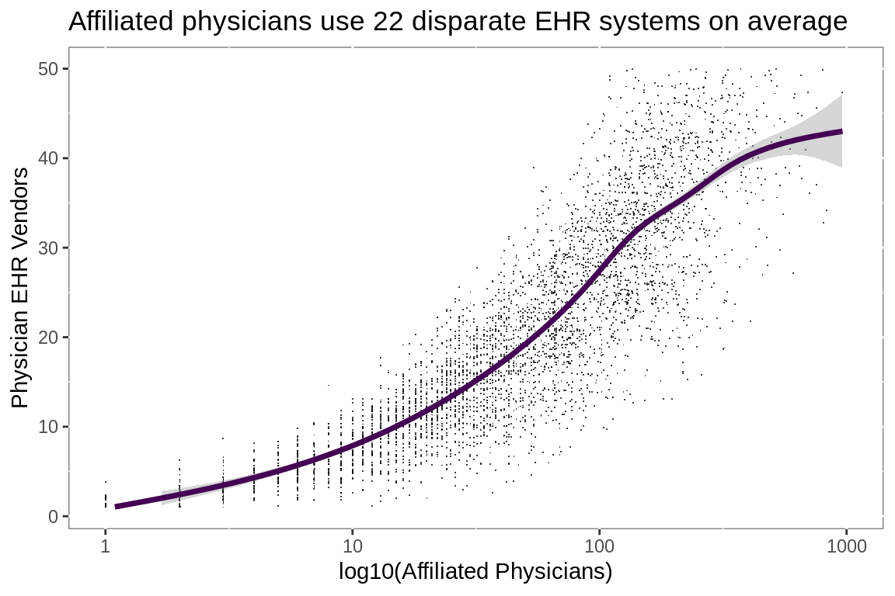

Interoperability
Visualizing interoperability challenges using two publicly available data sets from the Centers for Medicare and Medicaid Services:
1. EHR Products Used for Meaningful Use Attestation
2. Physician Compare National Downloadable File
Interoperability impacts healthcare providers, health systems and patients.
While the US healthcare system has made impressive strides in the last 5 years, there is still a long way to go.
# meaningful use reports ----
# cms api url
url.mu <- paste0("http://dashboard.healthit.gov/datadashboard/",
"data/MU_REPORT.csv")
# read Meaningful Use report direct from CMS
mu <- fread(url.mu)
total.attest <- nrow(mu)
# create attestation date from date components
mu[, attested := lubridate::make_date(
as.numeric(Attestation_Year),
as.numeric(Attestation_Month),
1L)]
# clean character variables
mu[, Vendor_Name := str_conv(Vendor_Name, "latin1")]
mu[, EHR_Product_Name := str_conv(EHR_Product_Name, "latin1")]
mu[, Product_Classification := ifelse(Product_Classification == "",
"Complete EHR",
Product_Classification)]
mu[, Product_Setting := ifelse(Product_Setting == "" &
Provider_Type == "EP",
"Ambulatory",
ifelse(Product_Setting == "" &
Provider_Type != "EP",
"Inpatient",
Product_Setting))]
mu[, CCN := ifelse(nchar(CCN) == 5,
paste0("0", CCN),
as.character(CCN))]
mu.ids <- unique(mu[!is.na(CCN),.(NPI, CCN)])
# calculate primary & secondary EMR vendors
# based on number of complete installs by provider type
vend.rank <- mu %>%
group_by(Provider_Type, Product_Classification, Vendor_Name) %>%
summarize(n = n()) %>%
ungroup() %>%
spread(Product_Classification, n, fill = 0) %>%
mutate(Primary = ifelse(`Complete EHR` > `Modular EHR`,
"Primary",
"Secondary"),
Total = `Complete EHR` + `Modular EHR`)
# flatten to a single row per NPI per attestation
mu <- mu %>%
mutate(Type = ifelse(Specialty == "",
Hospital_Type,
Specialty)) %>%
select(NPI,
attested,
Program_Year,
Vendor_Name,
Type,
Provider_Type,
Product_Setting,
Product_Classification,
attested,
ZIP,
Business_State_Territory) %>%
left_join(vend.rank %>%
select(Provider_Type,
Vendor_Name,
PrimaryCount = `Complete EHR`)) %>%
unique() %>%
group_by(NPI,
attested,
Program_Year,
Provider_Type,
Product_Classification) %>%
mutate(Primary = ifelse(PrimaryCount == max(PrimaryCount),
"Primary", "Secondary")) %>%
group_by(NPI,
attested,
Program_Year,
Provider_Type,
Product_Classification,
Primary) %>%
filter(PrimaryCount == max(PrimaryCount)) %>%
select(-PrimaryCount) %>%
filter(row_number() == 1) %>%
spread(Primary, Vendor_Name)
mu <- mu %>%
left_join(mu.ids)
setDT(mu)
setindexv(mu, c("NPI", "CCN"))Meaningful Use Report
361,763 Eligible Providers and 4,675 Eligible Hospitals attested to meaningful use of Electronic Health Records. The meaningful use data contains 1,934,819 records. Duplicates are the primary difficulty in working with the data. Providers attesting with modular EHR solutions have multiple rows per attestation, which is complicated by providers making multiple attestations for multiple program years at multiple locations.
To reduce the duplication, the vendor(s) for each provider and attestation were tagged as primary or secondary. The primary/secondary determination was made based on the number of attestations, by product and provider type, made for each of the 991 vendors.
# hospital affiliations ----
# Get Physician Compare data via API call to CMS
# will read in all variables as character as CCN5 screws up
# vartype hueristics
cls <- rep("character", 41)
# call data directly from CMS
aff.hosp <- fread("https://data.medicare.gov/api/views/mj5m-pzi6/rows.csv?accessType=DOWNLOAD", colClasses = cls)
total.docs <- nrow(aff.hosp)
# affiliated column names
ccn <- paste("Hospital affiliation CCN", 1:5)
lbn <- paste("Hospital affiliation LBN", 1:5)
# variables of interest
# limiting identifing variables to Ids
Vars <- c("NPI",
ccn,
lbn)
# limit to target variables
aff.hosp <- aff.hosp[, Vars, with = FALSE]
# prepare NPI for matching
aff.hosp <- aff.hosp[, NPI := as.integer(NPI)]
# limit to unique NPI
aff.hosp <- unique(aff.hosp, by = Vars)
# reshape data----
# melt is the equivalent of gather/pivot
aff.hosp <- melt(aff.hosp, measure = patterns("CCN",
"LBN"),
value.name = c("MedicareNumber",
"Hospital"))
aff.hosp[,variable := NULL]
# limit to providers reporting affiliations
aff.hosp <- aff.hosp[MedicareNumber != "",]Physician Compare
662,849 Providers reported affiliations with 4,737 hospitals to CMS. The physician compare data contains 2,033,326 records. In addition to duplicates based on multiple practice locations, the hospital affiliation data is stored in 5 sets of name/Id columns. The data.table package was used to manipulate the name and Id columns simultaneously. That data.table is memory efficient and fast is a bonus.
aff.mu <- mu[mu[, .I[attested == max(attested)],
by = NPI]$V1
][NPI %in%
unique(aff.hosp$NPI) |
CCN %in%
unique(aff.hosp$MedicareNumber)
][attested > "2015-12-31"]
aff.mu.vnd <- aff.hosp %>%
inner_join(aff.mu %>%
select(NPI,
Primary,
Secondary), by = "NPI") %>%
unique() %>%
inner_join(aff.mu %>%
select(MedicareNumber = CCN,
Primary,
Secondary),
by = "MedicareNumber") %>%
unique() %>%
filter(!is.na(Primary.y) & !is.na(Primary.x)) %>%
mutate(Secondary.y = ifelse(is.na(Secondary.y), "None",
Secondary.y),
Secondary.x = ifelse(is.na(Secondary.x), "None",
Secondary.x),
InterOp = Primary.x == Primary.y |
Secondary.y != "None" &
Primary.x == Secondary.y |
Secondary.x != "None" &
Secondary.x == Secondary.y)
rm(aff.hosp)
q.gc <- q_gc()
aff.mu.avg <- aff.mu.vnd %>%
group_by(MedicareNumber) %>%
summarize(Affiliated = n_distinct(NPI),
Vendors = n_distinct(Primary.x),
InterOp = mean(InterOp))
aff.mu.npi <- aff.mu.vnd %>%
group_by(NPI) %>%
summarize(Affiliated = n_distinct(MedicareNumber),
Vendors = n_distinct(Primary.y),
InterOp = mean(InterOp))Since January 2016 198,113 providers reported their EHR vendor and affiliation with at least one of 4,137 hospitals.
aff.mu.disp <- aff.mu.vnd %>%
filter(InterOp == F) %>%
group_by(NPI) %>%
summarize(Vendors = n_distinct(Primary.y),
Affiliations = n_distinct(MedicareNumber))Hospitals
ggplot(aff.mu.avg, aes(Affiliated, Vendors))+
geom_jitter(shape = ".")+
geom_smooth(size = 1.25,
span = 1)+
scale_y_continuous(limits = c(1, 50))+
scale_x_log10(limits = c(1, 1000))+
labs(title = "Increasing Affiliated Physicians increases EHRs",
subtitle =
paste0("Hospitals with large numbers of affiliated",
"\nphysicians have to interact with large numbers",
" of EHRs"),
x = "log10(Affiliated Physicians)",
y = "Physician EHR Vendors")+
theme(panel.background =
element_rect(fill = "white",
colour = "grey50"))
By EHR vendor
aff.mu.vnd %>%
mutate(Primary.y = case_when(str_detect(Primary.y,
"MEDITECH") ~ "MEDITECH",
str_detect(Primary.y,
"CPSI") ~ "CPSI",
str_detect(Primary.y,
"McKesson") ~ "Allscripts",
TRUE ~
str_remove_all(Primary.y,
" Corporation"))) %>%
group_by(MedicareNumber, Primary.y) %>%
summarize(Affiliated = n_distinct(NPI),
Vendors = n_distinct(Primary.x)) %>%
ungroup() %>%
mutate(Vendor = fct_lump(Primary.y, n = 5)) %>%
ggplot(aes(Affiliated, Vendors))+
geom_jitter(shape = ".", alpha = 2/3)+
geom_smooth(aes(color = Vendor),
fullrange = F,
span = 1,
se = F)+
scale_x_log10()+
scale_color_brewer(palette = "Set2")+
guides(color = guide_legend(title = "Hospital\nVendor"))+
labs(title = "Hospital Vendor Impact",
subtitle = "Detail view",
x = "log10(Affiliated Physicians)",
y = "Physician EHR Vendors")+
coord_cartesian(xlim = c(1, 500),
ylim = c(1, 25))+
theme(panel.background =
element_rect(fill = "white",
colour = "grey50"))
Providers
aff.mu.vnd %>%
filter(NPI %in% aff.mu.npi[aff.mu.npi$Affiliated == 1,]$NPI) %>%
group_by(InterOp) %>%
summarize(n = n()) %>%
ungroup() %>%
mutate(label = paste0(round(n / sum(n), 2)*100, "%")) %>%
ggplot(aes(InterOp, n))+
geom_col(aes(fill = InterOp), show.legend = F)+
geom_text(aes(label = label),
nudge_y = -3000,
fontface = "bold",
size = 5,
color = "#FFFFFF")+
scale_fill_brewer(palette = "Set1")+
scale_y_continuous(labels = scales::comma)+
labs(title =
paste(comma(nrow(aff.mu.npi[aff.mu.npi$Affiliated ==
1,])),
"Physicians reporting a single affiliation"),
y = "Physicians",
x = "Reported Use of same EHR as Affiliated Hospital")+
theme(panel.background =
element_rect(fill = "white",
colour = "grey50"))
aff.mu.npi %>%
filter(Affiliated > 1) %>%
mutate(Same = InterOp > 0) %>%
group_by(Same) %>%
summarize(n = n_distinct(NPI)) %>%
ungroup() %>%
mutate(label = paste0(round(n / sum(n), 2)*100, "%")) %>%
ggplot(aes(Same, n))+
geom_col(aes(fill = Same), show.legend = F)+
geom_text(aes(label = label),
nudge_y = -3000,
fontface = "bold",
size = 5,
color = "#FFFFFF")+
scale_fill_brewer(palette = "Set1")+
scale_y_continuous(labels = scales::comma)+
labs(title =
paste(comma(nrow(aff.mu.npi[aff.mu.npi$Affiliated !=
1,])),
"Physicians reporting multiple affiliations"),
y = "Physicians",
x = paste0("Reported Use of same EHR ",
"as at least 1 Affiliated Hospital"))+
theme(panel.background =
element_rect(fill = "white",
colour = "grey50"))

aff.mu.disp %>%
mutate(Vendors = case_when(Affiliations == 5 &
Vendors > 5 ~ 5.0,
Affiliations == 4 &
Vendors > 4 ~ 4.0,
Affiliations == 3 &
Vendors > 3 ~ 3.0,
Affiliations == 2 &
Vendors > 2 ~ 2.0,
Affiliations == 1 &
Vendors > 1 ~ 1.0,
TRUE ~ as.double(Vendors)),
Affiliations = factor(Affiliations)) %>%
ggplot(aes(x = Vendors, y = Affiliations,
group = Affiliations, fill = ..x..))+
geom_density_ridges_gradient(scale = 1.2, color = "#FFFFFF") +
scale_x_continuous(expand = c(0.01, 0)) +
scale_y_discrete(expand = c(0.01, 0)) +
guides(fill = "none")+
labs(title = "Increasing Affiliations increases EHRs",
subtitle =
paste0("Physicians affiliated with multiple hospitals",
"\nhave to interact with multiple EHRs"),
x = "Disparate EHR Vendors",
y = "Hospital Affiliations") +
theme(panel.background =
element_rect(fill = "white",
colour = "grey50"))
Attestation Dates
aff.mu %>%
mutate(attested = lubridate::floor_date(attested, "month")) %>%
ggplot(aes(attested))+
geom_bar(fill = "#377EB8")+
scale_x_date()+
labs(title = "Attestation Dates",
x = "Most Recent Attestation",
y = NULL)+
scale_y_continuous(labels = scales::comma)+
facet_grid(rows = vars(Provider_Type), scales = "free_y")+
theme(panel.background =
element_rect(fill = "white",
colour = "grey50"),
strip.background = element_rect(fill = "white",
colour = "grey50"),
strip.text.y = element_text(angle = 0),
panel.spacing = unit(0, "lines"))